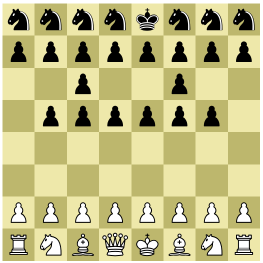
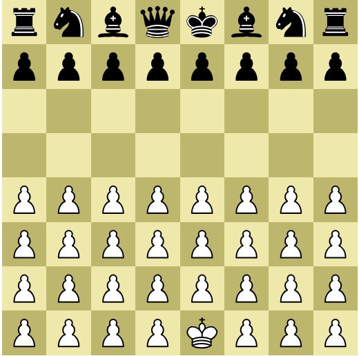
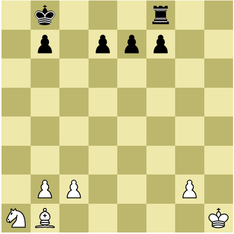
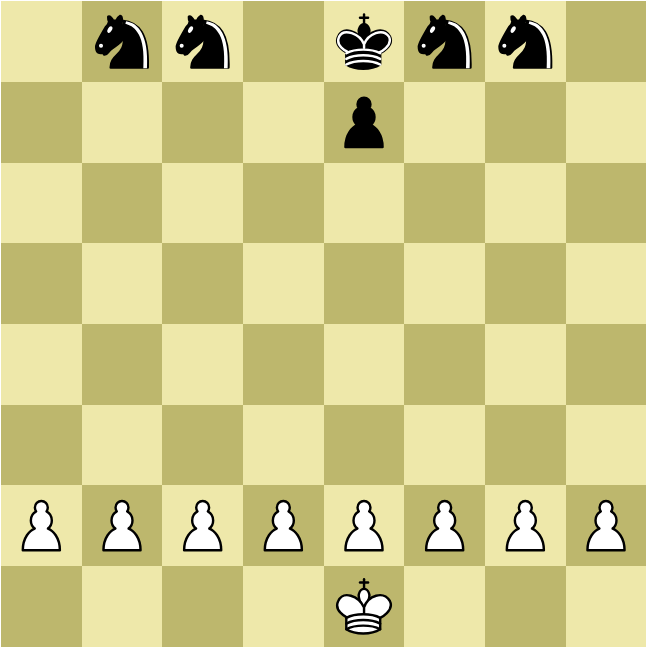
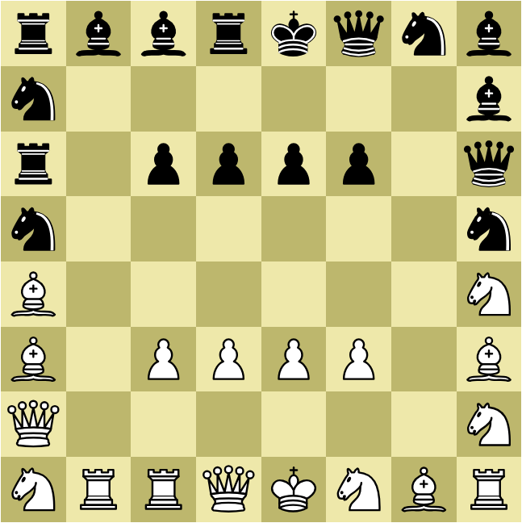
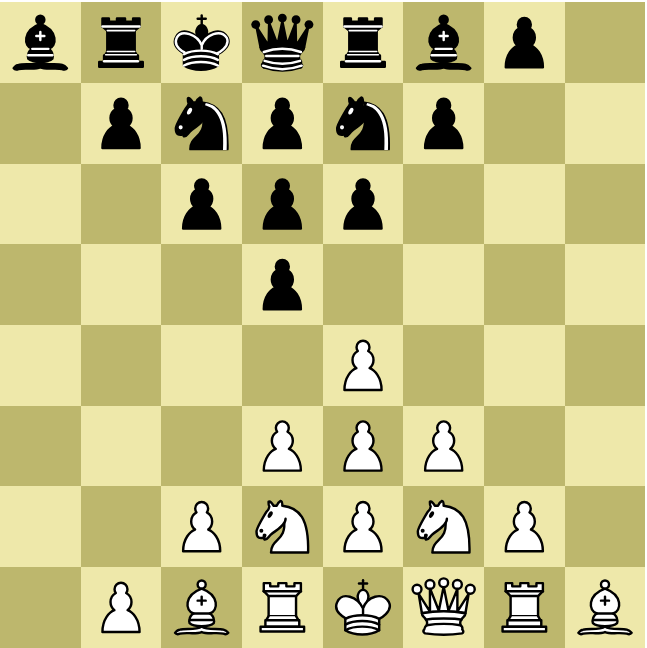
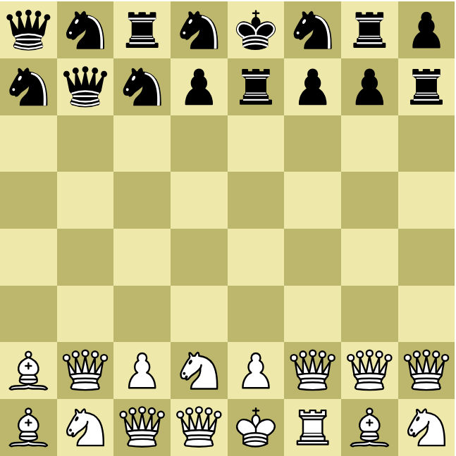
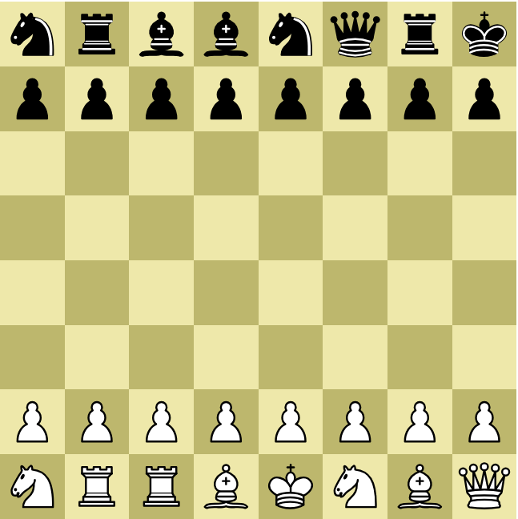

"Три ферзя" • Queens vs Knights
Асимметричный вариант: три ферзя против семи коней. Тяжёлая артиллерия против лёгкой кавалерии: максимум контроля пространства против непредсказуемых прыжков и вилок.
Нестандартные расстановки и асимметричные наборы фигур. Зазубренные дебюты не помогут — неожиданные тактические взрывы с первых ходов. Сыграй против бота: выбери сторону и уровень сложности.
Асимметричный вариант: три ферзя против семи коней. Тяжёлая артиллерия против лёгкой кавалерии: максимум контроля пространства против непредсказуемых прыжков и вилок.

Плотная волна чёрных пешек и коней давит по центру и флангам. Задача белых — сдержать численное превосходство и не дать противнику прорваться.

Массированная волна белых идёт на стремительный натиск. Чёрные отвечают контролем пространства и методичным разрушением «орды».

Мини-эндшпиль с проходными пешками: материальный перевес (лишний ферзь) почти всегда решает. Победа строится на тактике: отвлечение, жертва, размен, блокировка, прорыв. Важен расчёт на 3–5 ходов вперёд — ошибка лишает инициативы. Расстановка генерируется случайно.

Акцент на пешечном прорыве: вал белых давит по всем вертикалям. Задача чёрных — точно блокировать продвижение конями. Любая ошибка ведёт к немедленному прорыву.

Хаотичная плотная расстановка: угрозы возникают с первого хода. Доминируют вилки, двойные удары, открытые шахи и перегруз защиты. Дебютная подготовка не нужна — важна тактическая реакция.

Стандартный набор фигур, но смещён в форму клина. Такая расстановка ломает привычные дебюты и заставляет искать нестандартные решения.

Вариант с перекосом сил в пользу одной стороны. Расстановка случайная, игрок выбирает сторону и уровень бота. Каждый матч — уникальная тактическая головоломка: победа требует точного расчёта в условиях преднамеренного неравенства.

Рандомизированная расстановка по принципу Chess960, но без рокировки. Отсутствие безопасного убежища для короля делает дебют технической задачей: он не заучивается, а рассчитывается. Тактическое зрение прокачивается с первых ходов.